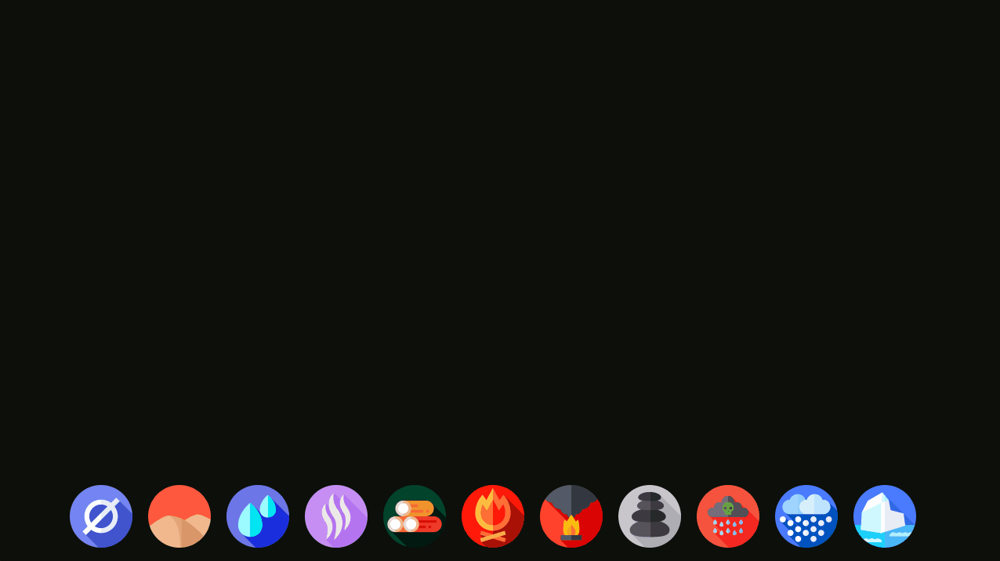
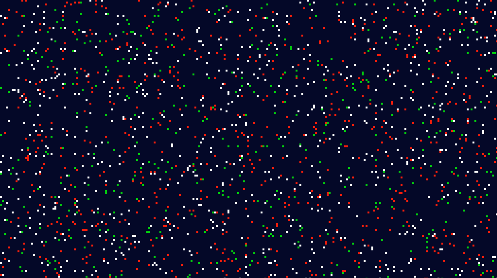

</Sand Box_>

In this window, you have about ten elements that you can arrange where you want. Then, each element evolves according to the laws of physics. For example, water flows, ice melts and wood burns...
</_Ecosystem Simulation>
It is a representation of the Prey-Predator system, which allows to model an ecosystem.

</Joystick Timer_>

This is a timer made with an Arduino Uno board and two components: a joystick and a 4x7 segments display.
</_Fractal Explorer>
A fractal is a particularly aesthetic mathematical object in which one can, among other things, zoom to infinity and find the basic pattern, which can be experienced here.

</Minesweeper_>

It is a reproduction of the famous Minesweeper game.
</_Outbreak Simulation>
This simulation is a model (therefore far from corresponding to reality) of an outbreak that would reach a given population represented by a grid, where each cell represents an individual.

</Mosaic Image_>

Make the mosaic of an image composed of images, which can be seen only by zooming.
</_Game of Life>
The Game of Life was invented by mathematician John Conway. It is a cellular automaton that consists of two steps. (It is actually not really a game, but more a kind of simulation).

</Snake_>

It is a reproduction of the famous game Snake, whose rules are quite well known. You are in the skin of the snake, and you want to eat apples, be careful not to go out of the field and not to eat yourself.
</_Minecraft Survival>
This is my first video game made from scratch. As its name indicates, it is based on the principle of Minecraft, but the gameplay changes completely.

</EseoNova_>

Campaign website of the EseoNova list at ESEO.
</_ASCII Webcam>
Film yourself with your webcam in ASCII in real time.